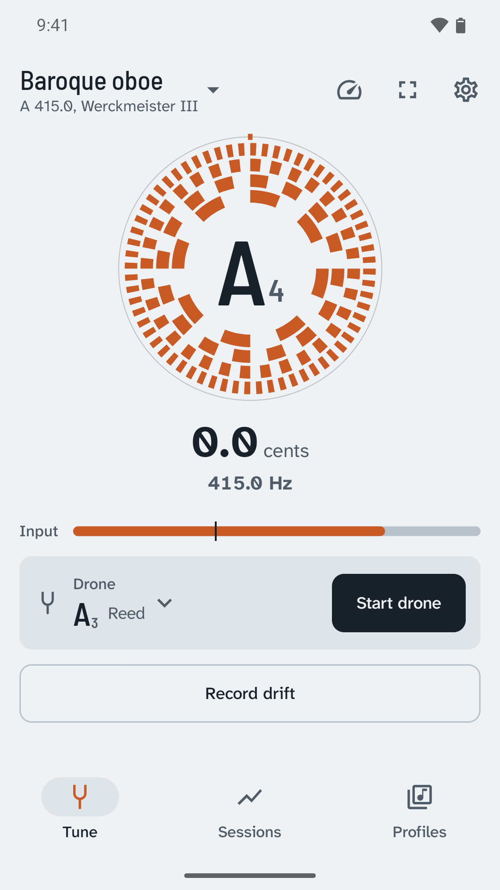
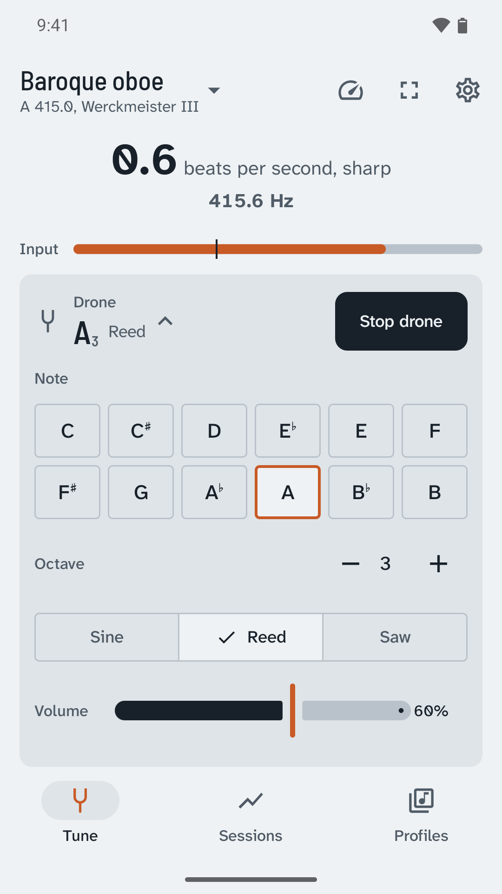
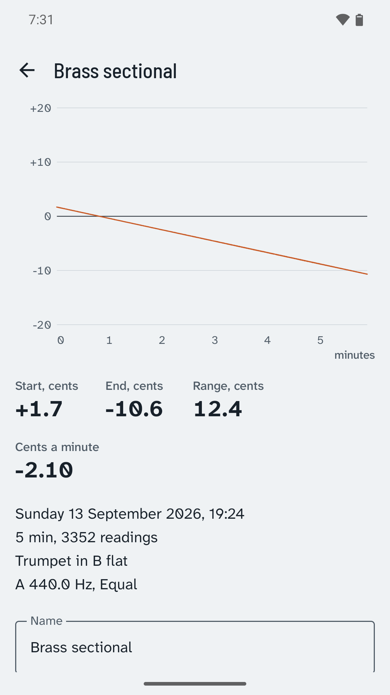
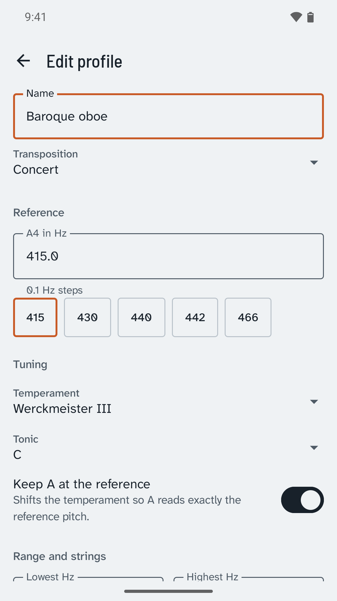
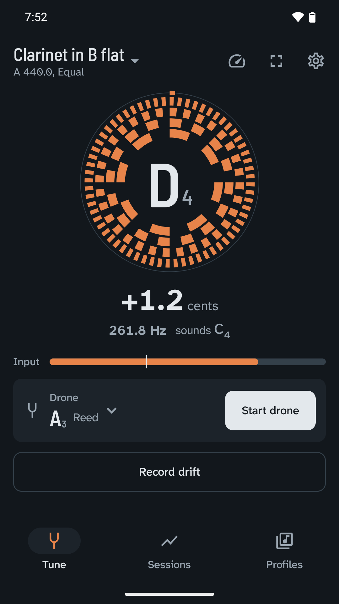
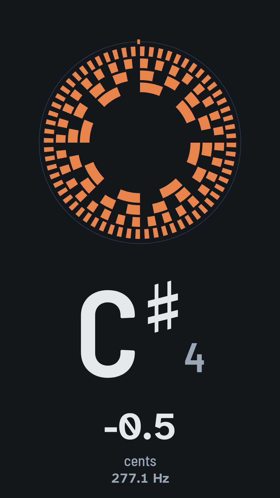

The strobe tuner that holds a drone while it listens.
The disc stands still when you are in tune, and a drone keeps sounding while Beatwheel measures.
Get it on Google PlayUSD 3.99 once. No ads, works offline.

Stillness is the signal.
Sharp turns it clockwise.
Flat turns it back.
In tune it stops.

A drone that keeps sounding while you tune
Start a sine, reed or saw drone on any note from octave 2 to 5. It follows the same reference and temperament as the meter, so you can play into it until the beats stop.
With headphones the drone never reaches the microphone. On the speaker, Beatwheel removes its own drone from what it hears, and near unison the readout switches to the beats per second you can hear.
See how far a held note drifts
Record a held note for up to an hour, ten readings a second. Name the session, then export it as CSV or share it with the section.
- Start, cents
- +1.7
- End, cents
- -10.6
- Cents a minute
- -2.10

Export CSV
session,started_at,elapsed_s,written_note,sounding_note,target_hz,measured_hz,cents,reference_a_hz,temperament,profile,gap Brass sectional,2026-09-13T19:24:15.695+05:30,0.1,C5,Bb4,466.16,466.62,1.7,440.0,Equal,Trumpet in B flat,0 Brass sectional,2026-09-13T19:24:15.695+05:30,180.0,C5,Bb4,466.16,464.93,-4.6,440.0,Equal,Trumpet in B flat,0 Brass sectional,2026-09-13T19:24:15.695+05:30,353.6,C5,Bb4,466.16,463.30,-10.7,440.0,Equal,Trumpet in B flat,0
One row per reading, with the written and sounding note, target and measured hertz, and cents.
Set up for the instrument in your hands



Temperaments
Equal, just, Pythagorean, quarter-comma meantone, Werckmeister III and Kirnberger III, plus your own twelve cents offsets.
Fifteen instrument profiles
Chromatic, guitar, ukulele, violin, viola, cello, double bass, flute, oboe, clarinet, alto and tenor saxophone, trumpet, horn and harmonium. Copy any of them to make your own.
Calm between notes
A noise gate and a sensitivity setting with a live input meter, and a held-tone mode for oboe and harmonium that averages over a longer window.
Your data stays on the device
Profiles, temperaments and sessions go out as one backup file and come back in. No audio is ever saved. If you decline the microphone, the drone, profiles and sessions still work.
One-time purchase. No ads, no subscription, no account. Works fully offline.
Beatwheel asks for the microphone and nothing else, and has no internet permission. It does not include a metronome, harmonic-by-harmonic strobes, or drum and tabla tuning.